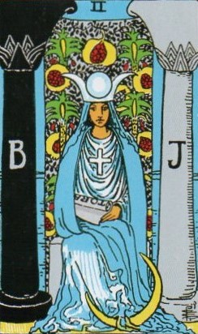
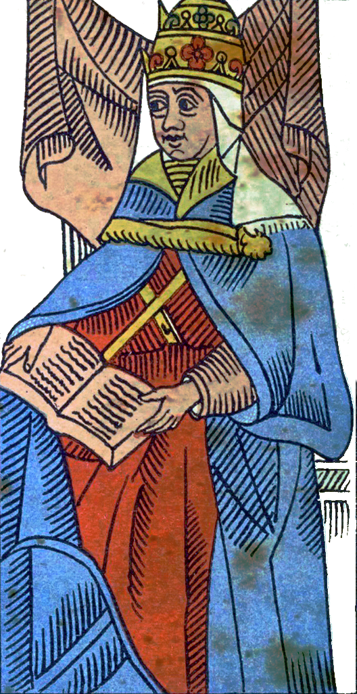
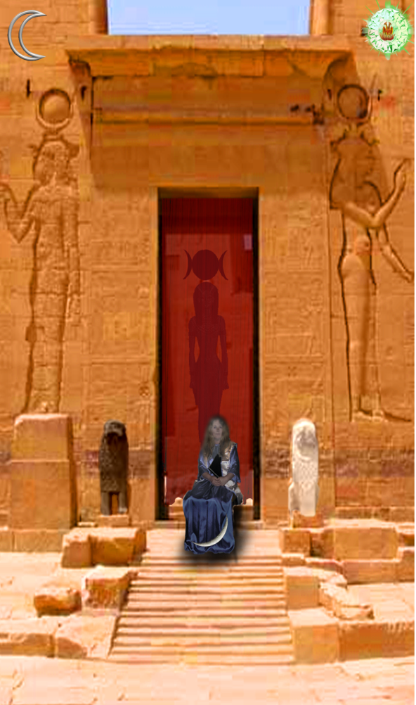
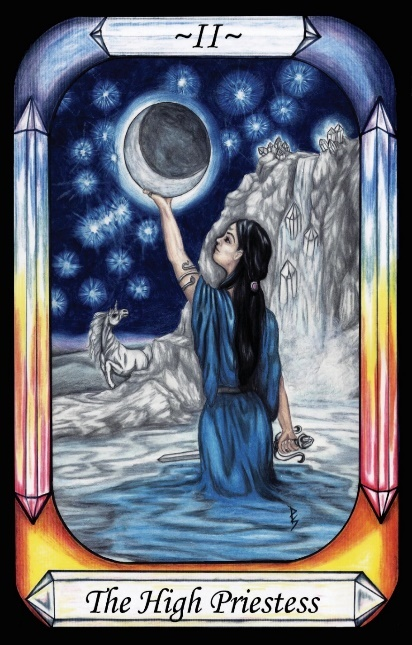
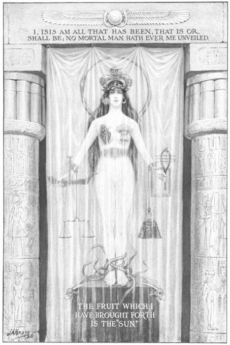

The High Priestess




Representation |
Isis, Venus |
Meaning |
A virgin Priestess of Isis, with knowledge of the Moon cycles hidden from men by a curtain. A wise woman or midwife. Secret women’s’ business. |
Opposite card |
The Moon, having variance and non-constancy. |
Function |
The High Priestess is Isis, removal of lunar inconsistency, who brought a great understanding of nature and fertility to the Egyptians, or any Priestess of the Moon.
[P61] To the Moon, Man gives up the power of increasing and decreasing, becoming constant. [High Priestess] (Yesod)
RWS Imagery
A woman sits between two pillars, one black with the letter B (for Boaz) on it, and one white with the letter J (for Joachim) on it. She wears Blue/Silver robes, with an equal-armed cross on her chest. She sits before a veil or curtain, upon which are depicted pomegranates. She wears a crown on her head, and a crescent Moon is at her feet. On her chest she wears an equal-armed cross, and caries a partially obscured scroll, which may be the Torah, or TORA of the word Tarot, as previously discussed in the Wheel of Fortune card.
Interpretation of RWS Imagery
The crescent Moon at the Priestesses feet is a clear indication as to the relevant Governor for this card. The blue and silver of the Priestess robes are also indicative of the Moon. The Pillars are indicative of the Temple.
The curtain is described below in the Discussion section.
Discussion
The High Priestess guards the Temple of Isis, hiding lunar secrets behind the curtain. Manly P. Hall's writings provide valuable insight:
“I am Isis, mistress of the whole land: I was instructed by Hermes, and with Hermes I invented the writings of the nations, in order that not all should write with the same letters. I gave mankind their laws, and ordained what no man can alter. I am the eldest daughter of Kronos. I am the wife and sister of the king Osiris. I am she who rises in the Dog Star. I am she who is called the goddess of women. … I am she who separated the heaven from the Earth. I have pointed out their paths to the starts. I have invented seamanship. … I have brought together men and women …I have ordained that the elders shall be beloved by the children.

Figure 5 - Isis behind a curtain, from Secret Teachings of All Ages – Manly P. Hall
With my brother Osiris I made an end to cannibalism. I have instructed mankind in the mysteries. I have taught reverence of the divine statues. I have established the temple precincts. I have overthrown the dominion of tyrants. I have caused men to love women. I have made Justice more powerful than silver and gold. I have caused truth to be considered beautiful.” (See Erman’s Handbook of Egyptian Religion.)
Diodorus writes of a famous inscription carved on a column at Nysa, in Arabia, wherein Isis described herself as follows: “I am Isis, Queen of this country. I was instructed by Mercury. No one can destroy the laws which I have established. I am the eldest daughter of Saturn, most ancient of the gods. I am the wife and sister of Osiris the King. I first made known to mortals the use of wheat. I am the mother of Horus the King. In my honour was the city of Bubaste built.” (from Morals and Dogma, by Albert Pike).
The face and form of Isis were covered with a veil of scarlet cloth, symbolic of ignorance and emotionalism which forever stand between man and Truth. Isis lifts her veil and discovers herself to the true and wise investigator who unselfishly, humbly, and earnestly seeks to understand the mysteries which surround him in the universe. Those to whom she reveals herself are warned to remain silent concerning the mysteries which they have seen. The great admonition to the Wise Men was: “If you know, be silent.” To the vulgar and profane, the infidel and disinterested one, she does not uncover her face, for they could not understand the secret processes of the invisible worlds.